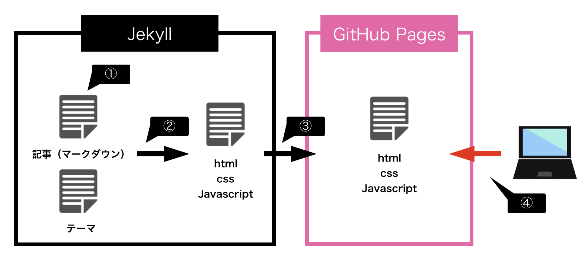

JekyllとGitHub Pagesでイケてるブログをサクッと作る

JekyllとGitHub Pageでブログを作成したので、作成方法を説明します。 無料で簡単に作ることが出来たので、個人ブログをもちたい場合はオススメです。
Jekyllとは？
Jekyll(ジキル)とは静的サイトジェネレーターの一つです。
静的サイトジェネレータとはマークダウン式の記事とテーマをもとに静的ファイル（html/css/javascript）を自動生成してくれるツールです。
マークダウン方式の書き方さえ分かればコードは書く必要がないので非常に楽です。
Jekyll以外にも主要なものでGatsby、Hugo、Hexoといったものがありますが、私が知る範囲ではJekyllとHexoはテーマをサイトからダウンロード出来てマークダウン記事を作成するだけで良いので、簡単にやりたい場合はどちらかを選ぶと思います。
Hexoは中国が開発元で、ググって見ても中国語の情報が多かったのでJekyllにしました。
Github Pageとは？
GitHubPagesとはGitHubによる静的サイトのホスティングサービスです。
要はブログのような情報が動的に変わらないコンテンツを公開するためのサービスです。
Wordpressはサーバーのレンタル料金がかかってしまいますが、GitHub Pagesは無料なので簡単に試しにやって見ることが出来るのが良い点です。
JekyllとGithubPageを使用してブログを公開した場合以下のような感じになるます。

全体的な流れは以下のようになります。
①マークダウン方式の記事を作成
②記事とテーマをもとにhtml/css/javascriptを生成(これが静的サイトジェネレータのお仕事)
③生成されたファイルをGitHubPagesにアップ
④ブラウザからアクセスし、GitHubPagesにアップされたファイルを画面に表示する。
では実際にブログを作成して公開するまでの手順を以下の順で説明します。
- 環境構築(RubyとJekyllのインストール)
- ブログテーマのダウンロード
- テスト記事の投稿
- GitHub Pagesに公開
1. 環境構築
Rubyのインストール
バージョン管理のためにrbenv,ruby-builをインストール
$ brew install rbenv ruby-build
$ echo 'eval "$(rbenv init -)"' >> ~/.bash_profile
$ source ~/.bash_profile
インストールするRubyのバージョンを指定してRubyをインストール
$ rbenv install -l //これで表示される最新のバージョンを指定する
$ rbenv install 2.6.0
$ rbenv global 2.6.0 //デフォルトで使用するバージョンを指定
Jekyllのインストール
$ gem install jekyll bundler //Gem管理ツールbundlerとJekyllのインストール
$ jekyll new blog //Jekyll用のディレクトリを作成
$ cd blog
$ bundle exec jekyll serve //Jekyllをローカルで起動
http://localhost:4000 へアクセスしローカル環境でサイトが表示されていることを確認します。
ローカルで確認する際はbundle exec jekyll serveというコマンドでJekyllを起動する必要があります。
起動中に記事を編集しても反映されるので編集しても再起動する必要はありません。
2. テーマのダウンロード
今のままだとデフォルトのテーマで味気がないので、テーマをダウンロードします。 公式サイトに色々なテーマがありますが、 今回はブログ用のテーマから無料のものを選択します。 私は Scriptor というなかなかイケてるテーマにしました。
$ cd ~/ //ホームディレクトリに移動（これは好きな場所でOK）
$ git clone https://github.com/JustGoodThemes/Scriptor-Jekyll-Theme.git
$ bundle exec jekyll serve
http://localhost:4000 にアクセスして以下のようにテーマが反映されている事を確認します。
3. テスト記事の作成
マークダウンファイルを作成して自分でも記事が作成出来る事を確認しましょう。
以下ディレクトリ配下に2020-01-01-test.mdというマークダウンファイルを作成 /Users/{username}/Scriptor-Jekyll-Theme/_posts
以下内容を記述して保存
---
layout: post
title: "test"
description: "test"
date: 2020-01-01
---
テストですよ。
http://localhost:4000 を更新すると作成した記事が反映されていることが分かります。
今後記事を作成するする際はこのようにマークダウンファイルを作成してローカルで確認後にGitHubPagesにアップして公開する流れになります。
このままだとダウンロードしたままの情報が残ってしまいますので最低限以下は変更しておきましょう。
- 以下ディレクトリ配下の不要なマークダウンファイルを削除
/Users/{username}/Scriptor-Jekyll-Theme/_posts
- 以下の筆者情報を変更
/Users/{username}/Scriptor-Jekyll-Theme/_data/author.json
- Aboutページの編集
/Users/{username}/Scriptor-Jekyll-Theme/about.md
GitHub Pagesへ公開
GitHubアカウントの作成
GitHubの公式サイトでアカウントを登録します。
4. リポジトリの作成
作成したアカウントでブログ用のリポジトリを作成します。(作成方法は以下を参考) リポジトリの名前は「username.git.io」として下さい。
Gitのインストール
今回はパッケージ管理ツールのHomebrewでインストールしました。 Homebrewがインストールされているか確認
$ brew -v
バージョン情報が出力されない場合はHomebrewをインストールする。
$ /bin/bash -c "$(curl -fsSL https://raw.githubusercontent.com/Homebrew/install/master/install.sh)"
Homebrewでgitをインストールする。
$ brew install git
GitHub Pagesへ公開
ローカルリポジトリを作成してGitHubで作成してしたリモートリポジトリにコミット
$ cd ~/blogs
$ git init //ローカルリポジトリを作成
$ git add . //コミット対象ファイル追加
$ git commit -m "initial commit" //コミット対象ファイルをローカルリポジトリにコミット
$ git remote set-url origin git@github.com:{username}/{username}.github.io.git //コミット対象のリポジトリURLを指定
$ git push origin master
GitHubでリポジトリを見ると上記のコミット内容が反映されているはずです。 https://{username}.github.io/ にアクセスするとテーマが反映されている事を確認できます。 GitHub上で反映されているけどブラウザで反映されていない場合は少し時間を置いてから確認してみて下さい。
これでブログが公開されましたので、あとはローカルで記事を作成して完成したらGitHubに公開するという流れで記事を作成することが出来ます。 記事の作成自体は非常に簡単なのであとは自分の好きな事をガシガシ書いていきましょう。
参考
http://jmcglone.com/guides/github-pages/
https://jekyllrb.com/docs/
https://marbles.hatenablog.com/entry/2019/01/16/221417
https://qiita.com/stkdev/items/0e2df27736acbea9bd26
Comments